RICHARD'S CASTLE
Richardâs Castle was a pre-Conquest fortification built by a Norman Knight who had been invited to settle in the country by King Edward the Confessor. It offered a secure base against Welsh incursions and enabled control of the River Teme as well as a portage route to the River Lugg. It was rebuilt in stone in the thirteenth century.
History
Gallery
Getting There
Richardâs Castle, within the Honour of Burford, was one of the earliest castles built in England and pre-dates the Norman Conquest. It was built by Richard le Scrope, a Norman Knight within the retinue of Ralph of Mantes who had been invited to settle in England by King Edward the Confessor. Edward had spent almost thirty years in exile in Normandy after his father, Ethelred the Unready, had been overthrown in 1013 by Sweyn Forkbeard, King of Denmark. Sweyn died in 1014 and was followed by King Cnut but his death in 1035, followed shortly after by his sons, left the way clear for the return of the former Royal family. As Ethelred had died in 1016, it was Edward who was invited to England to take the throne in 1042. His restoration was supported by Earl Godwin, the most powerful landowner in England, but his support came at a price â Edward had to marry Godwin's daughter Edith. For the first few years of Edward's reign, Godwin dominated his council and the King looked for a political counter weight to the Earl's power. Concurrently the Welsh were causing Edward trouble and an English army led by Aldred, Bishop of Worcester was surprised and defeated in 1049 when they attempted to stop a raid into Shropshire. For these reasons King Edward invited a number Normans to settle in England including his nephew Ralph of Mantes to whom he gave the title Earl of the East Midlands. Ralph granted some of his new estates to his Norman followers including Richard le Scrope who was also appointed Sheriff of Shropshire. To secure the border and provide an anchor against Earl Godwin, these men started building castles. The first such structure ever seen in England was raised at Ewyas Harold in Herefordshire and was soon followed by a myriad of similar fortifications including Richard's Castle which, as the name suggests, was built by Richard le Scrope.
The site chosen for Richardâs Castle, which was called Avreton Castle in the Domesday Book (1086), was influenced by both tactical and strategic factors. From a tactical perspective the former the site occupied a naturally strong position on top of a spur of high ground with the castle effectively using the natural topography to obtain a defensive advantage. This certainly ensured it was able to act as secure base and, as necessary, redoubt against Welsh incursions. However there were invariably wider strategic considerations in choosing the castleâs site in particular the proximity of the River Teme, a key medieval artery used for moving goods through the region. Richard le Scrope is associated with two other pre-Conquest castles at Homme and Tenbury Wells . Both are situated directly adjacent to the River Teme, whilst Richardâs Castle itself is just two miles from the water, and collectively these fortifications would have enabled complete domination of the river. Furthermore, Richardâs Castle also afforded control over a portage route, an overland road that was used for moving goods between two rivers. On the west was the River Luggy, which offered navigable access to Hereford and the River Wye. On the east was the River Teme offering a direct route to Worcester and the River Severn.
Richardâs Castle occupied a broadly rectangular area with a motte built in the western corner. The site may previously have been a Saxon manor but it was Richard who added the earth and timber defence consisting of the motte and the bailey rampart. The site was surrounded by a ditch crossed by a single causeway which providing access to the gatehouse in the southern corner. At some point during the late eleventh/early twelfth century a town borough was established next to the castle. Earthwork defences were erected no later than 1200 within an area akin to an outer bailey.
Richard le Scrope retained his estates after the Norman invasion of 1066 and participated in the military campaign against Edric Silvaticus (Eric the Wild) doubtless using Richardâs Castle as a base for operations. He died sometime before 1087 and was followed by his son, Osbern Fitz Richard, who clearly thrived under the new regime acquiring extensive new estates across Worcestershire. These lands passed to his grandson, Osbern Fitz Hugh, in 1140 but thereafter the succession to the title became embroiled in the complex politics associated with the Anarchy, the civil that raged between 1139 and 1154 over the English succession. Osbern was loyal to King Stephen but may also have made a pact with Matildaâs faction as, upon his death, he granted the Honour of Burford to Hugh Say whose family had supported her claim to the throne.
The castle passed into the hands of a cadet branch of the Mortimer family in the thirteenth century and it was possibly they who rebuilt it in stone including adding the octagonal Keep and the substantial curtain wall. The town also grew in prosperity with King John granting it a market charter and by 1304 there were 103 burgesses suggesting that the borough had grown beyond its walls by this time.
Richardâs Castle was attacked and taken in 1264 by Simon de Montfort, Earl of Leicester. He had rebelled against Henry III but was defeated at the Battle of Evesham the following year and Richardâs Castle was returned to the Mortimers. However the death of Hugh Mortimer in 1304, at the hands of his wife, ended the male line of that branch of the family. Thereafter the castle passed through marriage to Richard Talbot whose family was last recorded living there in the late fourteenth century. Some occupation continued thereafter as some modifications were made to the site in the early fifteenth century with one of the towers being converted into a dovecote. Thereafter the castle seems to have gone into decline and by the sixteenth century it was an abandoned ruin. The town also eventually failed and today only a small hamlet exists outside the castle.
Bibliography
Allen, R (1976). English Castles . Batsford, London.
Armitage, E.S (1904). Early Norman Castles of the British Isles . English Historical Review Vol 14 (Reprinted by Amazon).
Carruthers, B and Ingram, J. Anglo-Saxon Chronicle: Illustrated and Annotated . Pen and Sword, Barnsley.
Creighton, O.H (2002). Castles and Landscapes: Power, Community and Fortification in Medieval England . Equinox, Bristol.
Douglas, D.C and Rothwell, H (ed) (1975). English Historical Documents Vol 3 (1189-1327) . Routledge, London.
King, C.D.J (1983). Castellarium anglicanum: an index and bibliography of the castles in England, Wales and the Islands . Kraus International Publications.
Liddiard, R (2005). Castles in Context: Power, Symbolism and Landscape 1066-1500 . Macclesfield.
Morris, M (2003). Castle: A History of the Buildings that Shaped Medieval Britain . Windmill Books, London.
Prior, S (2006). A Few Well-Positioned Castles: The Norman Art of War . Tempus, London.
Purton, P.F (2009). A History of the Early Medieval Siege c. 450-1220 . Boydell Press, Woodbridge
Remfry, P.M (1999). Nine castles of Burford Barony, 1048 to 1308 . SCS Publishing.
Sewell, R.C (1846). Gesta Stephani, Regis Anglorum et Ducis Normannorum .
Williams, A and Martin, G.H (2003). Domesday Book: A Complete Translation . Viking, London.
What's There?
Richardâs Castle is one of the best preserved motte-and-bailey castles in Herefordshire. The motte and bailey both survive and there are some masonry remains offering glimpses of the scale of this once magnificent fortress. The adjacent village retains its original layout, giving a superb glimpse into the configuration of a medieval planned settlement, whilst the (originally) twelfth century St Bartholomew church, in the care of the Churches Conservation Trust, is open to the public.
Bailey . The outline of the bailey survives including earthworks and portions of the curtain wall.
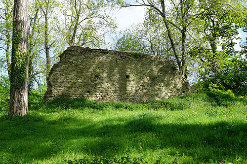
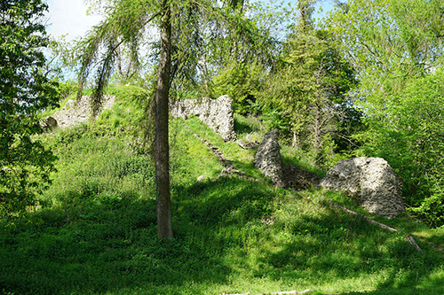
Bailey Curtain Wall . A portion of the bailey curtain wall stands to its original height, almost eight metres tall, giving a good impression of what a substantial fortification the castle must have been.
Motte . The motte was located in the western corner of the bailey and would have formed part of the original castle raised by Richard le Scrope. An octagonal stone Keep was later built on top of the existing earthwork.
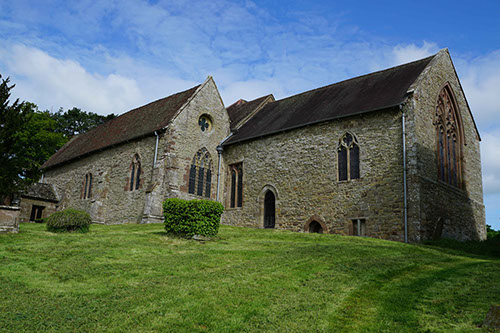
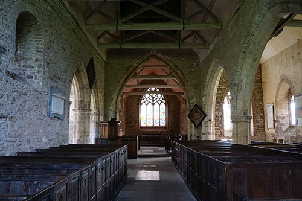
Richard's Castle Layout . The castle had a single gatehouse leading into the bailey whilst a ditch surrounded the entire structure.
St Bartholomew Church . The castle site is accessed through the grounds of St Bartholomew church. This was contemporary with the castle with some of its fabric dating to the eleventh century. It is in the care of the Churches Conservation Trust and open to the public.
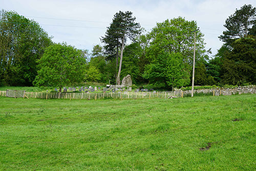
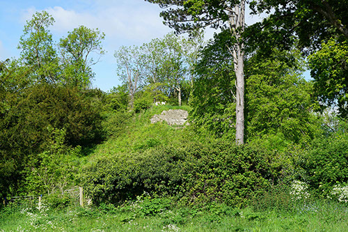
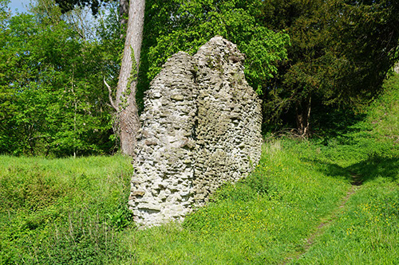
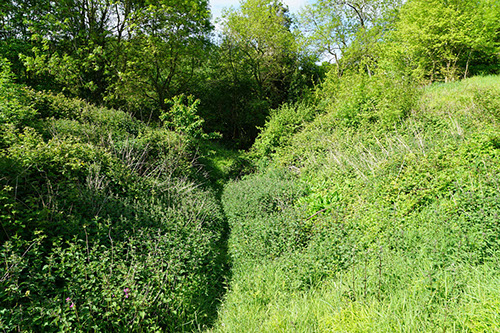
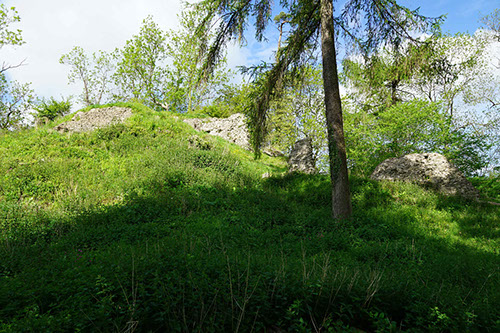
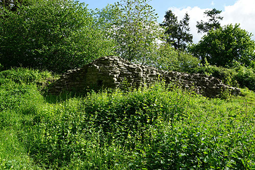
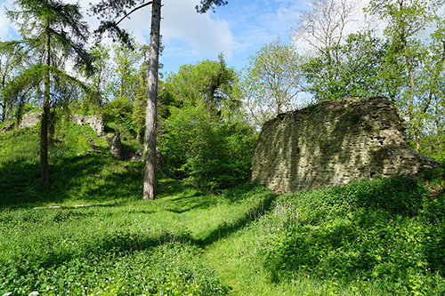
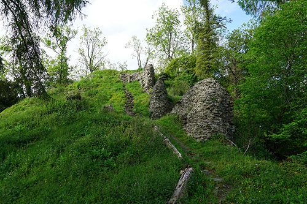
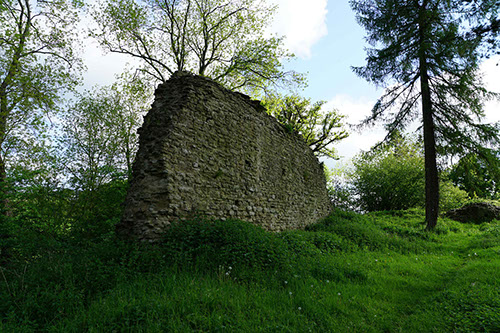
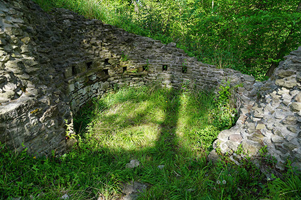
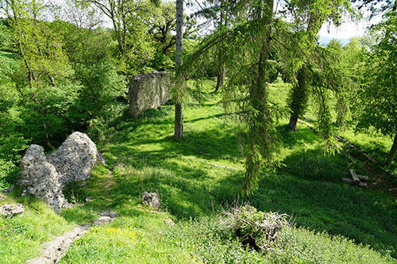
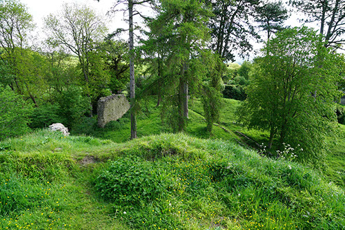
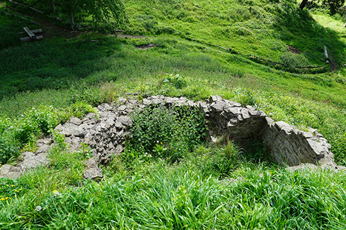

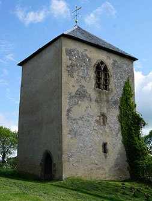
Richard's Castle is found off Wheatcommon Lane off the B4361, the turning to which is just to the north of the village of Richard's Castle. On-road parking is possible with care. Follow the sign-post to the Historic Church (St Bartholomew) and the site of the castle is accessed via a gate in the graveyard.
Car Parking Option
Wheatcommon Lane, SY8 4ET
52.327709N 2.756149W
Richard's Castle
No Postcode
52.327889N 2.759131W
About Us
Contact Us
Terms and Conditions
(c) Copyright 2019 CastlesFortsBattles.co.uk
Recovered original photographs, plans and images